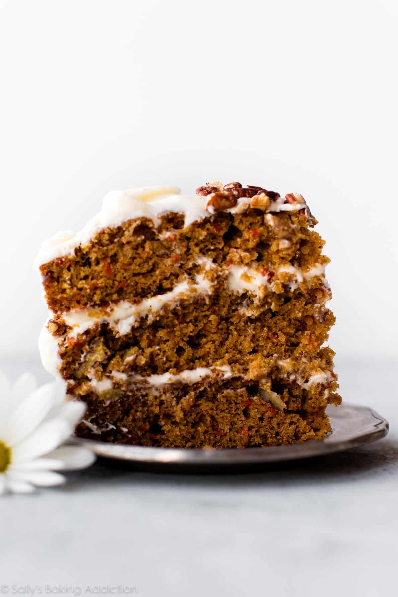
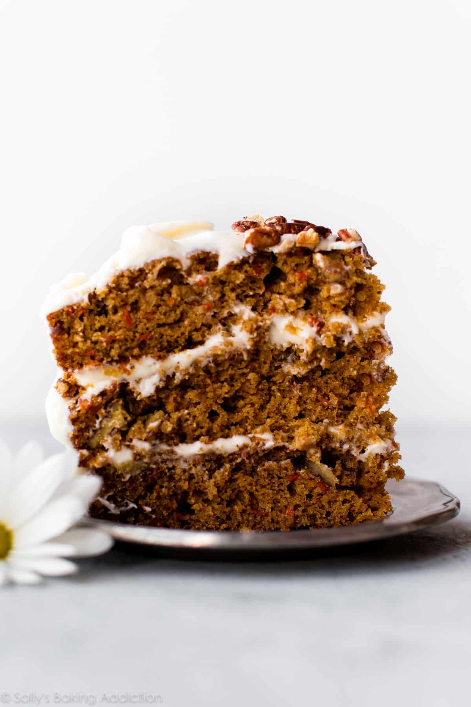
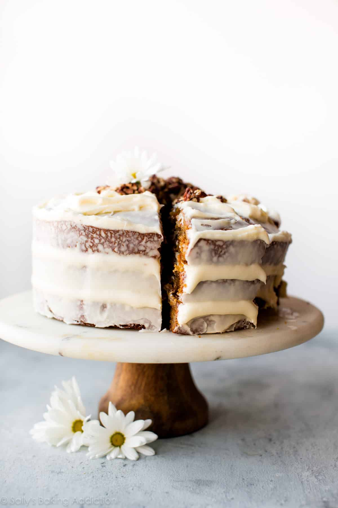
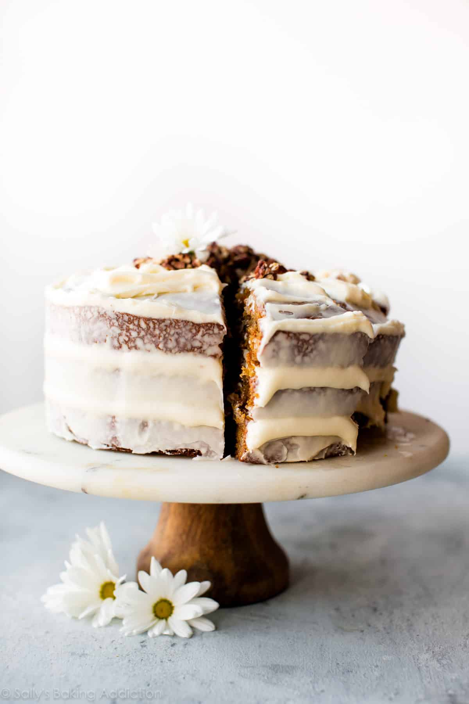

Tiramisu Tiramisu is a timeless no-bake Italian dessert combining espresso-dipped
ladyfingers and a creamy lightly
sweetened mascarpone cream. This recipe is from the late Maida Heatter and is easily the best
homemade
tiramisu recipe that I’ve ever tried.
A ccouple months ago, I was sent a new cookbook called Happiness is Baking. This cookbook includes
Maida
Heatter’s favorite recipes with the foreword written by Dorie Greenspan. I, unsurprisingly,
immediately fell
in love with my newest cookbook. It’s a collection of 100 foolproof and classic desserts including
cookies,
cakes, muffins, pies, tarts, and more that range from simple everyday cookies to outrageously
indulgent
chocolate soufflé cake.
Ingredients
e 1 and 1/4 cups (300ml) very strongly prepared espresso, warm or room temperature
6 Tablespoons (90ml) Grand Marnier*
4 large pasteurized eggs, separated*
1/2 cup (100g) granulated sugar, divided*
2 cups (480ml) heavy cream or heavy whipping cream
1/2 teaspoon pure vanilla extract
1/8 teaspoon salt
unsweetened natural or dutch-process cocoa powder
For those not familiar, Maida Heatter is an icon, especially in the baking world. Dubbed the Queen
of Cake,
her expansive culinary career included 9 cookbooks, recipes for the Times, a restaurant, and three
James
Beard Awards. Baker and author Dorie Greenspan once said “Whenever someone tells me they want to
learn
to bake, I tell them to start with Maida Heatter’s books. That’s what I did.” This latest cookbook
is a
testament to Maida’s legacy. She passed away only 2 months after this book was published. She leaves
behind an incalculable amount of inspiration to bakers and cooks all over the world.
Common Tiramisu Questions — Answered
What kind of rum do I use in tiramisu?
Dark rum is best, but you can use brandy or your favorite coffee liqueur.
Egg whites or whipped cream?
Most tiramisu recipes use whipped egg whites OR whipped cream in the mascarpone cream layers.
Egg whites contribute a more airy texture, while whipped cream makes the filling a bit more rich. This
recipe actually uses both, so you’re getting both delightful textures.
Are the eggs cooked?
Tiramisu is a no-bake dessert. The egg yolks are gently cooked on the stovetop, but the egg whites are
raw. Purchase pasteurized eggs because they are safe to consume raw.
What size pan to use?
This particular tiramisu recipe yields a large volume and the pan will be very full. Make sure your pan
is large enough. I recommend a 9x13 inch dish with at least a 12-14 cup capacity. This 4 quart dish is
wonderful too.
 

 
